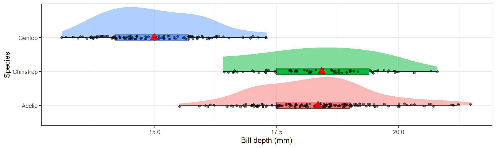

2025-09-17
| Response | Explanatory |
|---|---|
| y | x |
| outcome | predictor |
| dependent variable | independent variable |
| covariate | |
| feature |
Model notation: \(y \sim x\)
The \(Q\) and \(C\) notation is internal to this class. Not universal.
Quantitative Response vs Categorical Explanatory
n, nean, median, sd, IQR of the quantitative variable for each level of the categorical level.
# A tibble: 3 × 6
species n mean median sd IQR
<fct> <int> <dbl> <dbl> <dbl> <dbl>
1 Adelie 152 18.3 18.4 1.22 1.5
2 Chinstrap 68 18.4 18.4 1.14 1.90
3 Gentoo 124 15.0 15 0.981 1.5 Gentoo penguins have lower average bill depth compared to Adelie or Chinstrap (15.0mm vs 18.3 and 18.4mm respectively). Chinstrap however have a larger IQR at 1.9 compared to 1.5 for the others.
Similarly nice tables, but defaults to median and IQR.
Have to manually specify you want mean & sd.
Overlaid density plots
The distribution of bill depth are fairly normal for each species, with some higher end values causing a slight right skew for Adelie and Gentoo.
More code but nice alternative to violins.
library(ggdist) # for the "half-violin" plot (stat_slab)
ggplot(pen, aes(x=bill_depth_mm, y=species, fill=species)) +
stat_slab(alpha=.5, justification = 0) +
geom_boxplot(width = .2, outlier.shape = NA) +
geom_jitter(alpha = 0.5, height = 0.05) +
stat_summary(fun="mean", geom="point", col="red", size=4, pch=17) +
theme_bw() +
labs(x="Bill depth (mm)", y = "Species") +
theme(legend.position = "none")
Discuss shape, spread and center using comparative language.
The distribution of bill depth are fairly normal for each species, with some higher end values causing a slight right skew for Adelie and Gentoo. Gentoo penguins have lower average bill depth compared to Adelie or Chinstrap (15.0mm vs 18.3 and 18.4mm respectively). Chinstrap however have a larger IQR at 1.9 compared to 1.5 for the others.
Quantitative Response vs Quantitative Explanatory
[1] 0.8712018The correlation coefficient \(r\) is a measure of the strength and direction of a linear relationship between two variables.
Note: These values are guidelines and subject to variability within different disciplines ref
The relationship between flipper length and body mass in penguins is relatively linear, but there may be possible clustering on a third variable. There appears to be two groups below and above a flipper length of about 205mm.
Must include the direction (positive or negative), the strength quantified using \(r\), and the form (linear vs non-linear)
The penguin flipper length (mm) has a strong, positive, and reasonably linear correlation with body mass (g), r=0.87.
Categorical Response vs Categorical Explanatory
Always double check your work
One of the most common places for a mistake when creating a plot or a table between two categorical variables is by not paying close attention to the choice of denominator. And then also confirming the interpretation matches the table, which matches the plot.
Row Percents
Biscoe Dream Torgersen
Adelie 0.29 0.37 0.34
Chinstrap 0.00 1.00 0.00
Gentoo 1.00 0.00 0.0029% of Adelie penguins are on Biscoe Island.
Distribution of Islands within each species
Distribution of islands for each species
29% of Adelie penguins are on Biscoe Island.